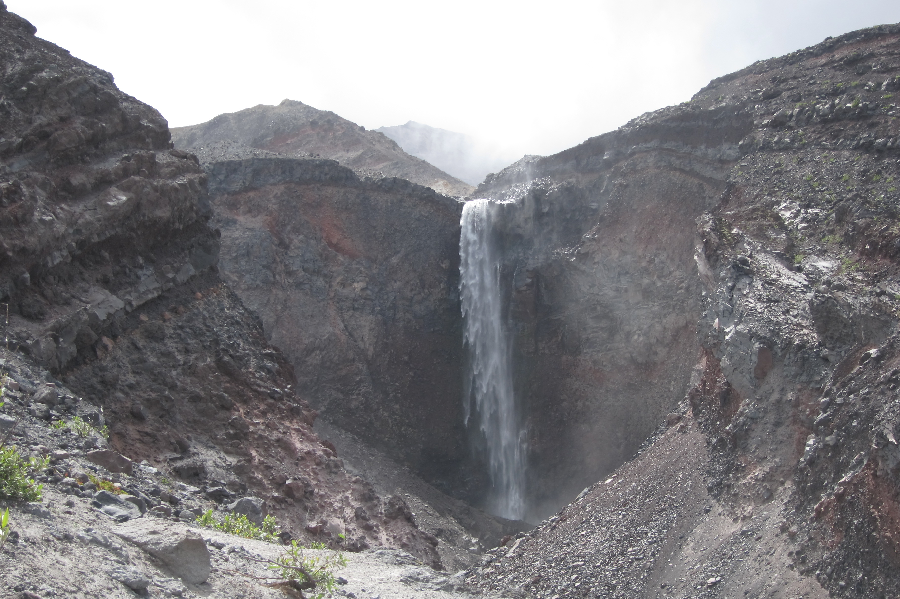

Summiting Mount St. Helens in 3+1 Days
Background
In July 2019 my friend Tobin and I decided to hike the full Loowit loop trail around Mount St. Helens. Both of us are experienced hikers and in reasonable shape and figured we could probably complete about 10-14 miles a day. The total distance around the mountain is about 35 miles, so we figured it should take us approximately 3 days to hike. We also managed to secure two passes to climb to the top of St. Helens for Aug 2nd which extended our trip by one day.
In order to climb to the top of Mount St. Helens you need a permit, which can be difficult to obtain depending on when you want to climb. The summer permits often sell out very quickly so initialy we assumed we would not be able to climb to the top. Even so, we signed up on a reseller web site and about a week before we were set to climb we were contacted by someone who had two extra passes as some people in their party backed out at the last moment. Further, the person lived in Seattle and was only a short distance from Tobin, so two days before we were set to leave Tobin drove to their house and bought the two passes from the seller. The guy was really nice and didn’t mark up the cost and just charged us the $20 or so per pass that he had paid.
The trip
Where to start
The first challenge was figuring out where to enter the Loowit trail and which direction to hike (clockwise or counter clockwise). Since there is only one trail up to the summit and our passes were for Aug 2nd we had a hard requirement of being near Monitor Ridge on the night of Aug 1st. Initially we thought we would enter at Sheep Canyon trailhead and hike clockwise on the trail. This would put us around Windy Pass on the first night and close to June Lake on the second night. (In retrospect this was probably not a great plan as Windy Pass isn’t named ironically. It is windy as hell and camping there would have been a trick.) However, the night before we were planning on leaving we realized the trailhead we were going to use had been washed out and we had to scramble to come up with a new plan.
The new plan was to park at the Windy Ridge trailhead and hike counter clockwise around the mountain. Tobin is from Seattle and I’m from Portland so we met at Spiffy’s at I-5 and Highway 12, stashed his car in a gravel parking near the 76 gas station and drove my car to the trailhead.
Spiffy’s is a bit of a dive restaurant off I-5 but there were not a lot of other places around and we knew we wanted to get some take away sandwiches. I showed up first, walked in and started looking at the menu. While I was deciding an older guy with a “get off my lawn” look to him walked in with a small lapdog in his arms. The hostess informed him that the dog would need to wait outside which caused him to get really upset and he demanded/yelled that it was a “therapy dog.” The hostess wasn’t having any of it and told him that he needed a permit or some sort of license if it was a therapy dog. At that point the guy yelled at the hostess “go fuck yourself you fucking whore” and stormed out. That was also the exact moment at which Tobin walked into the restaurant and only heard the insult as the guy stored out. We looked at each other and both cracked up laughing as it was such a bizarre way to start the trip. To her credit, the hostess handled it really well and the sandwiches were pretty good.
The trail head is at the end of NF-99, super easy to find and there is plenty of parking and a flush toilet bathroom. There are also some interesting informational signs that talk about the eruption and slow recovery of the area. We were a bit eager to get started so we didn’t linger too long. We ate the sandwiches we had picked up at Spiffy, sunscreened up and headed off.
Our packs weighed around 24lbs and since Mount St. Helens is well known for not having much water each of us was also carrying close to three liters.
Day 1 - 12.2 miles

Starting
For the first 1.7 miles the hike is along a winding gravel road. It’s blocked off from cars and well maintained, albeit not terribly interesting. At the end of the gravel road it’s still another 1.2 miles until you actually connect to the Loowit trail.
As we were hiking counter clockwise around the mountain we headed to the right and started on the Loowit trail. At this point the scenery looks sort of like rolling hills with the mountain in the distance. You can clearly see where the “blow out” was from the eruption but the walking is pretty easy.

Loowit Falls
Around a mile into the trail there is a turn out to go see Loowit Falls. It’s about 0.6 miles off the tail but well worth checking out. Although you can see the falls, you can’t actually get near it and even getting down to the water is a challenge.

We did meet up with a forest ranger just before we got to the turn off for the falls and chatted with him a bit. We asked the ranger if the waterfall was worth the extra hike (as we had a long ways that day). His answer was something like “yeah, it’s pretty good” which we didn’t find very convincing. I think we even said, in a joking way, “you are not exactly selling it here” to which he then responded very excitedly “it’s a 200 ft waterfall made of glacier melt coming out an active Volcano!” He was awesome and convinced us to go and waterfall was amazing.
Once we were back on the main trail it was another 0.8 miles until Willow Springs. Near Willow Springs there was actually water running across the path and if we had needed water this would have been a great place to fill up. It was also the last time we would find water until we stopped for camp that night.
Restricted Zone
After Willow Springs the scenery gets significantly more barren and rocky and the mountain looks blown out.
This is also the recovery area so no camping is allowed and really, it would have been hard to find a good spot to camp if we had wanted. This goes on for 5.4 miles, but the trail is pretty easy to see and mostly flat. In a couple of places we did drift slightly off the trail but thankfully others have erected rock piles that make getting back on the trail pretty easy.
Castle Ridge
As you get close to Castle Ridge the scenery starts to change significantly. The trail gets close to the ridge itself in sections and it’s a steep drop down. Tobin also recognized Huckleberries so we stopped at several big patches before continuing on.
From Castle Ridge it’s 1.4 miles down to the Toutle River. The start of this section is a switch back on a sandy incline that could be challenging to walk at time. At times it could take a fair bit of concentration but it wasn’t impossible. (I would not advise either this section or the ridge for smaller children.) After the sandy incline you enter the forest and continue your switchbacks down. It was here that Tobin discovered wild Salmonberries within reach of the trail and we were again stopping periodically.
Toutle River
The last section down to the river itself is basically a steep cliff for which the forest rangers have attached ropes for hikers to use. It requires going down backwards, with your feet walking down the cliff as you go hand over hand on the rope. Once you get over the initial shock it is actually rather easy to do.
When we were there the Toutle River was around 5 feet across and we were able to cross easily by jumping across rocks. We set up camp next to the river and the sandy floor made for a really plush ground. It was honestly one of the best night sleeps I’ve ever had camping.
There were lots of places to set up our tents and when we arrived were were the only people there, although another group did arrive just before dusk.
Day 2 - 10.2 miles
In the morning we packed up, filled our water bottles and used the ropes on the other side to climb out. The path to climb out was easier than the one to climb down and we probably could have managed it without the rope.
Our goal was to hike down near the Summit trail, find a spot to camp and hopefully water nearby. The other campers at the river were hiking the mountain in a clockwise direction and said they didn’t see any water other than June Lake. So our fall back plan was to find a camping spot around the Summit trail, dump our packs and hike down to June Lake for water.
Crescent Ridge
Right out of the river the hike is a brutal uphill climb that takes you from 3200 ft to 4700 ft in 1.7 miles. It’s almost entirely in the trees so you don’t get much of a view either. We did stop to take a couple of breaks on the hike up as we were still finding wild Salmonberries and Huckleberries. The Huckleberries especially were perfectly ripe and really good.

About 1.5 miles after reaching the top of that climb the trail crosses another ravine which again requires the use of attached ropes to climb in and out of. There was no water to cross in this one.
After that the next 4 miles is a really nice and relaxing hike through some beautiful scenery..
However, once we reached the trail for Summit Route we realized that “finding a camping spot near by” was virtually impossible. The trail is really cut into a steep mountain side and the flora is pretty thick on either side of the trail. We either had to hike back a mile or so to where there was some flat areas to camp, or hike forward and hope it flattened out. Hiking back would have taken us further away from water so we decided to go forward.
Chocolate Falls
Almost exactly two miles from Summit Route is Chocolate Falls and we decided to make camp there as there are plenty of flat areas nearby just before you cross over the falls. However, if you venture a little ways towards the cliff (and away from the falls) you will find a really nice circular camping area, complete with a fire pit (which we did not use). However, being so far off the path was really nice as we were not bothered at all by people passing on the trail and we felt secure about leaving our stuff there while we hiked to the summit the next day.

Chocolate Falls is named as such because the water contains a lot of sediment and takes on a chocolate milk color/consistency. But there was water and by straining it through a bandana and our Sawyer squeeze bag we were able to filter it enough to drink.

Using the bandana was not part of our inital plan but the water had a lot of silt in it and Tobin had a brand new bandana with him. Regretfully the bandana was red and had probably only been washed once so when we were straining the water it took on a very pink color. Even after using the Sawyer squeeze bag it still had a bit of a pinkish hue to it, but it didn’t seem to contribute any taste.
Day 3 - 8.2 miles - The Summit
Up until now our weather had been perfect but the this morning it was raining. We had initially thought we would start on our summit hike at 8am, but the rain was coming down hard enough that we just stayed in our tents for a couple of hours to see if it would clear. By 11am the rain was starting to let up enough so we decided to get going before it was too late. Both of us took our backpacks but only bought with us some food, water, warm clothes and our permit.
We now had to backtrack the two miles back to the Summit Route. This was mostly uphill and because of the rain we were getting soaked every time we brushed up against the plants on the sides of the trail.
Summit Ridge
This was not an easy hike. The very start of this path is like a normal, albeit steep, trail but it quickly turns into climbing over volcanic boulders. There isn’t really a trail to follow anymore, but the route is marked by posts which are placed just close enough together that you can just see the next one.
We passed a couple of people coming down who had gone up very early that morning and mentioned that the entire top of the mountain was pretty well fogged in and there was not much to see. Still, we were determined and continued up. The entire hike is about 2.1 miles, but it is very slow going.
About 2/3rds of the way up we met a forest ranger who told us that “there is a crack at the rim and it appears that a section is about to fall in,” so we should stay back several meters from the edge. He also mentioned that because of the weather he was guessing that of the 100 passes that were issued for that day, probably about 20 of them were going to actually be used.
Pumice Path
As hard as the hike was so far, the pumice path that is at the end is even harder. The incline is very steep and with every step up you take you slip back down almost a half a step. It’s like this for almost half a mile and the pumice easily doubles the distance. There is also not a clear visual for how far you still have to go so it can seem a bit unending at times.
The top


The good thing about waiting those three hours before leaving camp is that by the time we did reach the top the clouds were clearing and we could see all around the mountain. Unfortunately, the clouds in the crater did not clear so we never really got a good full look inside, although from time to time we got a couple of good glimpses.
Otherwise the view from the top is really amazing and I’m glad we made the trip. We did walk partway around the edge and we did see the crack the ranger was talking about. Because of the scale of everything, looking over the edge didn’t seem like a huge drop, but apparently its something like a 2600 ft drop.
After spending about 30 mins at the top we headed down which gives you a totally new perspective on just how far you have climbed and how much on a ridge you really are.
By the time we reached our camp at Chocolate Falls it was getting dark. We decided to grab some more water but then ended up just leaving it in our bottles so we could filter it the next day.
Day 4 - 12.3 miles
The next morning we were awaken by the sounds of runners going down the trail. It turns out that there were several races going on that day, with one of them being a full run around the mountain.
It also turns out that Chocolate Falls does not normally run in the mornings as it needs the afternoon sun to melt the snow. So it was really fortunate we had collected water the night before as it was totally dry that morning.
It was a 1.2 mile hike to the cut off for June Lake and shortly past that past a creek that was flowing and allowed us to get more water. This water was clear and didn’t need to be double filtered. After that it was 4.8 miles to Pumice Butte. The hike was really beautiful and you can see several other mountains in the distance. We stopped often for Huckleberries and the very occasional Salmonberry and to move off the path at times for runners.
Pumice Butte
Several people claim you can get water near Pumice Butte but all the water we saw was very stagnant and didn’t look good at all. The 1.8 miles of The Plains of Abraham are flat, long and because of the time of day we were there, very hot.


At the end of the Flats we could have opted to take a short cut back to the car (and my feet were killing me by this point), or we could continue on the Loowit trail and complete the full loop. We opted to complete the full loop and just before we headed up Windy pass we crossed a running creek and were able to fill up on water one last time.
Windy pass
The climb over Windy pass was harder than I was expecting as you have a steep climb up, and short jog forward and then a steep switchback back down. Also, deceptively, they have put posts that run up to the left, giving the impression you have to climb much higher than you actually do. I’m not sure if this was someones idea of a joke or if there is another trail up that way.
In any case we made it down and eventually made it back to the spot where we first started on the Loowit trail. From there it was 2.5 miles back to the car and by now we were feeling every step of it. Also the winding gravel road has several false turns where you can easily fall into thinking that the car is “just ahead”.
The car
Getting back to the car we changed into clean(er) clothes and headed back to Tobins car, stopping off at Plaza Jalisco’s Mexican restaurant for dinner.
Retrospective
Equipment
Boots
Tobin was wearing hiking shoes while I was wearing hiking boots. Although my boots did better when it was wet, and when we were climbing over the boulders, I think in the long run wearing hiking shoes would have been a better call. They are lighter and since we were on a trail for a majority of the time I think the boots were, perhaps, overkill. And by the last day, especially that last 2.5 miles, my feet were killing me. Tobin commented that his feet hurt as well, but I think the boots were adding to my discomfort.
Socks
I should have brought more socks. In the past when I’ve hiked for a couple of days (2-4) I usually bring just two pairs of socks, but for those hikes I’m often spending the day at the destination or wearing my camp shoes. For this trip we were hiking every day and it would have been really nice to put on a clean pair of socks every morning. Tobin washed his out in the river which seems to have helped, but really I just think at least one pair of socks a day is the minimum and perhaps two.
Camera
Tobin and I both brought cameras with us, but while I just brought my cell phone (because, hey, it has a camera in it) Tobin brought an actual digital camera. However, since I had my phone off for the majority of the trip, taking a picture meant that I had to stop, take out my phone, wait for it to turn on, take a picture and then shut it down and put it away again. Tobin, on the other hand, had a handy pouch on his belt and was able to quickly take out his camera to take pictures. I had thought that non-SLR digital cameras were a thing of the past, but after this trip I now included a digital camera in my packing list.
Water
Similar to the camera, Tobin’s backpack also enabled him to carry at least one liter of water where he could easily reach and drink from it. Mine was attached to the back of my backpack making it a pain and often I had to ask Tobin to get my water for me. As a consequence I probably drank less than I should have. I need to either figure out a better way to hook up a bottle, or get one of those camel packs.
More space
I had brought with me some fleece pants and a fleece top and while these don’t weigh much, they do take up a fair bit of space. Weight wasn’t really an issue on this trip, but space was. As it was, my bag was packed really tight which required extra time packing up in the morning and trying to get to anything in my pack. Since this trip I have replaced some of the gear in my pack with things that just take up less space so I can treat my bag as more of a simple stuff sack.
Bivy or Tent
I really like sleeping in a bivy but at the last moment I decided to swap my bivy for a tent which I feel was a good call. I like using a bivy because they are fast to set up and overall just more fun. However, on this trip it would have been miserable sleeping in the bivy when it was raining and the 3 hours we hung out in the tent before climbing to the summit. I’m also not sure I would have been as keen on leaving my bivy out when we were hiking.
Sleeping pad
I had a blow up air pad while Tobin had the waffle mat. I think the air pad is more comfortable, but you do run the risk that it could rupture and then you can be in some real trouble. I did have a small patch kit with me, but I’ve never used it and I’m not sure how well it would work if I had to patch my air pad at night. Additionally, the air pad is noisy as hell when you move around on it. It makes a sound that is similar to rubbing a balloon. For next season I think I’m going to try using a waffle pad and see how that works. I also like that the set up for the waffle pad is super quick.
Hiking gloves
I didn’t have a good pair of hiking gloves with me and I really wish I did. I did have some fingerless gloves (aka hobo gloves) which convert to mittens, and while they were warm enough they were not the best for climbing with. Ultimately I need to get a good pair of gloves that are warm enough for the evenings, but also rugged enough to climb over boulders with. Or, if no such glove exists, then perhaps two pairs, one for warmth and one for climbing.
Folding chair
I have also added to my bag a folding chair. Yeah, I could just sit on stones and trees and the such, but after a long day, and in the morning, it is nice to be able to sit on a real chair. Sitting on the stones and logs meant that I was constantly trying to find a comfortable one or leaning to the side as I am sitting. The new folding chairs are down around a pound now so I’m hoping to try this out on my next hike.
Sawyer squeeze bottles
These things are awesome. When we got home and cleaned it out it was amazing how brown the water was and how much they filtered things. They are awesome, I just wanted to point that out.
Hike
Bugs
Normally I’m bothered by mosquitoes but I don’t think we encountered any on this trip. Perhaps this is due to the general lack of water but even the flies were not that bad.
Overall
All in all we had a fantastic time and hiked a total of 42.9 miles. The changes in the scenery were really interesting and the rope climbs and wild berries made for an interesting trek. Even though we had to scramble to find an alternative, I really think entering at Windy Pass and working counter clockwise worked out well for us. The only disappointment was that the weather wasn’t clearer when we were at the top, but it just means we will have to return sometime.
Forest Rangers
And finally, I want to give special thanks to the awesome forest rangers we met along the way. They are super fun to talk with and a treasure trove of information. They are also the ones that go through each year and set the ropes so you can climb down and up the cliffs. So thank you!
Joshua Gerth
Engineering Manager
Systems Architect
My research interests include big data, language parsing, ray tracing and blockchain.